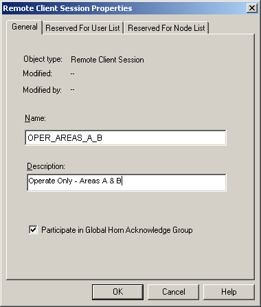

Remote Client sessions need to be added and configured under the Remote Client subsystem in the DeltaV Explorer.
To add a Remote Client session, complete the following steps:
In DeltaV Explorer, select the workstation name for which you want to create a Remote Client session.
Click the + sign next to the workstation name, if necessary, to expand its contents.
Right-click Remote Client and select New Remote Client Session.
In the Remote Client Session Properties dialog, give the session a meaningful name that will help users identify it, especially if it is to be restricted to certain users.
Include a description to further identify any restrictions on the session's use (such as the plant areas or licenses that are assigned to it ).

The Participate in Global Horn Acknowledge Group field is selected by default. It is recommended that this field remain selected. This allows the remote session user to acknowledge alarms that sound for the areas to which they have access.